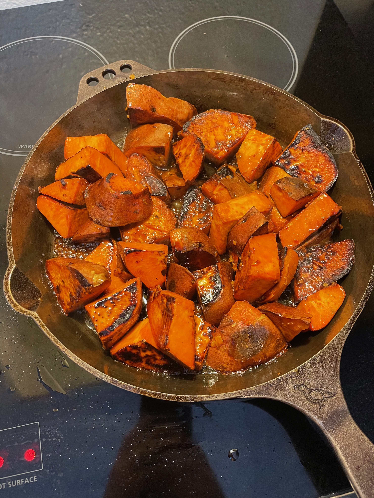

Home
Home
Cast Iron-Seered Sweet Potatoes

Description
Get the best of both worlds from your sweet potatoes and create a texture that is crispy on the outside yet soft on the inside with the help of the oven and your cast iron skillet! Roast your sweet potatoes and, just before they're fully cooked, seer them in the cast iron skillet with a butter, miso, and maple syrup glaze.
Adapted from Roasted and Seered Sweet Potatoes by Field Company
Ingredients
- 6 medium sweet potatoes (3 - 3 1/2 lbs), scrubbed
- 4 tbsp butter
- 1/4 cup maple syrup
- 1/4 cup white miso
- 3 tbsp vegetable oil
- 20 large sage leaves
- Salt, to taste
Steps
- Preheat the oven to 425° F. Arrange the sweet potatoes in a large cast iron skillet (about 12 in). Roast the potatoes until just tender when pierced with a knife, 35 to 45 minutes. Transfer to a cutting board and let cool for at least 15 minutes.
- In a small saucepan, melt the butter over medium-low heat. Add the maple syrup and miso and heat, whisking, until smooth. Turn off the heat and set aside.
- Add the vegetable oil to the skillet and heat over medium-high heat until the oil shimmers. Fry the sage leaves, stirring constantly with a wooden spoon, until crisp, no more than 10 to 15 seconds. Transfer the sage to paper towels and season with salt.
- With the skillet still over medium-high heat, slice the potatoes into 2-inch chunks and add to the skillet, cut side down. Cook until deeply browned on the bottom, about 2 - 3 minutes. Turn the sweet potatoes over and cook until the other side is well browned for another 2 - 3 minutes. Pour out any excess oil.
- Pour the butter-maple over the sweet potatoes and cook, basting the potatoes with a spoon, until the glaze has thickened and coated the potatoes, 1 - 2 minutes. Transfer the sweet potatoes to a serving platter and drizzle with any remaining glaze. Season the sweet potatoes with salt, and scatter the fried sage over the top to serve.